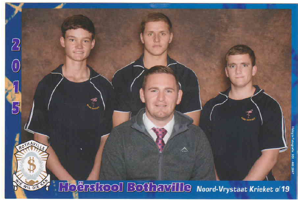

I believe that if life gives you lemons you should make lemonade and try to find somebody whose life has given them vodka and have a party
I believe that if life gives you lemons you should make lemonade and try to find somebody whose life has given them vodka and have a party
I like to describe myself as a well rounded person. I have worked on a number of projects while I was busy studing at the University and as a student I don't define myself by the work that I have done, but to the work that I want to do, as I student to the craft, I want to keep learning new skills, challenge myself to become the best version of me that I possible can be.
I like to think that I am a highly energetic person, fueled by curiosity to keep working on my craft and expand my skill set. I am passionate, expresive and a natural leader. I don't settle for anything other than perfection.
My energetic personallity feuls me in the persuit of many of my interests, hobbies and my study. I am a fast learner that is not afraid to learn new skills and tools in my persuit for success.
Through my years as a student, I have learned a lot of new skills, I have familiarize myself with a few of programming languages for example, Python, C++, C#, Java and I have tinkered with a few more. I have learned the necessary skill set to be ably do delegate a team to design, implement and maintain systems for new besinesses.
I would like to become an expert in a wide variety of fields and I am striving to do that.
As an example of my desire to widening my skill set, I have made this CV of myself using technologies I have not used in the past namely, Angular 10 which consists of HTML, CSS and typescript. I have enjoyed the experience using the new technology to broaden my skill set very much and can't wait to learn more of the technologies that are available to us in this modern age we live in.
I thoroughly enjoy what I am doing and I will keep on widening my skill set to become a better programmer, manager or were ever I might find myself, all I know is wherever I will be I will always give a hundred and ten percent to achieve my goal.
As I have mentioned above, I have a lot of hobbies and sport is definitely one of the important if not the most inportant one in my life. Through all of my life I have always been fond of sports. I played a lot of different sports and each one of them has learned my a valuable lesson.
I played for my highschool's first team golf where we played in the glacier open in Bloemfontein in 2015 and what golf has teached me in the 7+ years that I played the game, is that you can't expect to see results straight away, there is a process that needs to be followed and this lesson I have carried over in every aspect of my life. You can't expect to see results straight away in anything you do, you need to be patient and keep a consistant work rate and before you know the results will come.
I played for my highschool's first team cricket for 4 years, I received my O/19 National colours when I was in grade 11. I also played for Bothaville and Kroonstad cricket clubs.
What I have learned through the years of playing cricket is that teamwork is vital for success, and that the team that works together, wins together. On the cricket field is where I have aquired and evolved my leadership qualities.

What I have learned through sport is that whatever you want to become is possible if you work hard for it and realise that success isn't an over night thing like a bomb that when you press the detenation button and BOOM, no it is more like a firework with a slow burning fuse, you are never quite sure when the grand finally will happen, but you know it's around the corner.
Before I started studing at the university I worked at Bakkielinings & Sandblasting as a Debit and Credit Clerk(16.01.2017 - 2017.12.15). My duties included of processing invoices and bank account on Pastel, the owner is Paul Erasmus, telephone - 082 888 9171.
I also worked vacation job at Bothaville Rekenaar dienste. where I helped build computers and general maintenance on computers. The owner is Kobie de Beer, telephone - 083 284 9248
I had another vacation job at Madeleine Neilson Ouditeure, where I helped with filing and sorting of documents and general computer maintenance. The owner is Madeleine Neilson, telephone - 083 257 6061.
Here is a list of all my previous projects. Make sure to look at this list again as it will update as I work on new projects!
Here is my youtube channel where I post how-to-videos on programming, related content and occasionally gameplay clips of me and my friends ;)